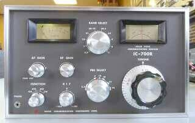
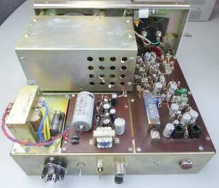
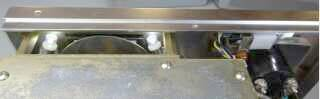
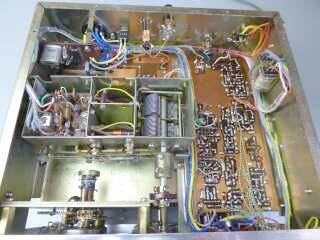
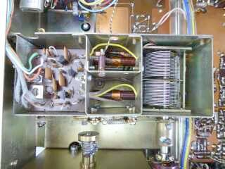
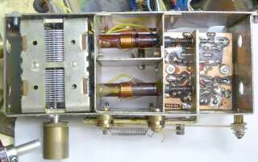
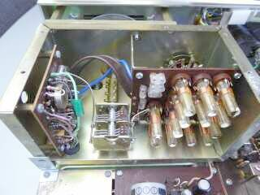
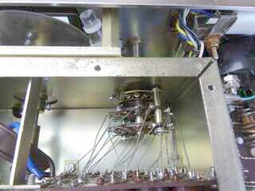

 |
まずはフロント／お顔から
コンパクトかつシンプルです
３．５ＭＨｚ帯から２９ＭＨｚ帯まで、ＶＦＯ＋ＦＩＸ水晶３個でカバー
２８ＭＨｚの位置で、逆コンバージョンで１０ＭＨｚ帯の受信が出来るようになっています（プリセレクタの位置で、結果として切り替わる）
ＨＦ５バンド＋１０ＭＨｚ帯に対応、です
モードは、ＡＭ、ＡＭ-ＡＮＬ、ＳＳＢ、ＣＷ
逆サイドバンドは受信できません |
|
 |
こちらは、リアから
電源トランスは非常にコンパクト
大きく見えるシールドの中身はＶＦＯ
メカフィル風に見えているのは、９ＭＨｚクリスタル・フィルタです
ＩＦ：９ＭＨｚのシングルコンバージョン・・・ＵＳ製品ではＳＷＡＮ製品、八重洲無線ではＦＲ-５０等と同様に、各バンド毎にVFOの発振周波数が異なります
２９ＭＨｚ受信時は、２０ＭＨｚ前後を発振していることになります
当然、安定度には問題が生じるでしょう
ＵＳ８Ｐボディプラグが手元になく、仮にＵＳソケットで外部からＤＣ１２Ｖを供給して、テストをスタートしました |
|
 |
照明ランプ(ダイヤル２個、メーター１個の計3個）
通電すると４００ｍＡ近く流れます
そのほとんどは、照明ランプの消費電流です
ここは今風に、ＬＥＤランプに交換しました
無信号時の消費電流は、一気に低下して１００ｍＡ程度に |
|
 |
こちらがボトムを撮したもの
ＲＦチューンが独特です
ＩＣ－７１にも採用してあるような糸掛けの機構が、ここでも採用されています（本機が先輩です！）
何が糸掛けで動いているかと言えば、コイルのコア、そうスラグチューン構造になっています
バンド切替はＶＦＯのみで、ＲＦ系のバンド切替はありません
バリコンと連動して、コイルのコアが動くという、ユニークな構造で、３．５～３０ＭＨｚをカバーします
ヒントは、ＤＡＶＣＯ ＤＲ-３０です
|
|
 |
こちらがＲＦチューン部のアップ写真です
独立したシールド・ケースに収まっています
中央に見える２つのコイルのコアと、バリコンの動きがひとつになるように、糸掛け構造が用意されています
左上にチラッと見えているのはマーカー用５００ＫＨｚクリスタルの頭です
リアパネルに、５０／１００ＫＨｚの切替が出来るＳＷ(センターＯＦＦ）が取り付いています |
 |
プリセレクタ・ユニットを取り外して、反対側から見たものです
ＡＮＴ側コイルのコアの動きがおかしくなったので、分解して修正しました
スプリングを押さえているワッシャが、スプリングに食い込んでいました
ボビンの固定も瞬間接着剤で！
これでＲＦ部もきちんと調整が出来ました
シングル・スーパーの強み？で、トラッキングの必要なコイルは２つで済みます |
|
 |
こちらが問題？のＶＦＯ部です
シールドケースを取り払って撮しています
各バンド毎に発振コイルが用意してあります
水晶ソケットは、ＦＩＸ-ＣＨ用です
バリコンそのものは頑丈そうなものが使ってありますが、バンド切替ＳＷは、普通のベークライト製、ＳＷＡＮのようにタイト製の採用ではありません
ｘ－Ｌｏｃｋ組込前の様子です |
|
 |
今回、一番悩ませられた原因があったところです
バンド切替に連動して、発振コイルを切り替えます
たまたま調整のスタートを７ＭＨｚ帯としたのですが、変な発振をするは、受信周波数は安定しないは、一体何が起きているのだろうと、バンドＳＷの接点や、バリコンのアースベロをクリーニングしても、一向に変化がありません
ここで試しにと、３．５ＨＨｚ帯や１４ＭＨｚ帯に切り替えてみると、それなりに受信するではありませんか
もしやと思い、絶縁ドライバで、見えているスズメッキ線を一つずつ押してみると、外れた配線がありました
これが７ＭＨｚ帯の発振コイルに接続されるスズメッキ線だった！！
トラブルの原因判明！です |
|
ＩＦ関係の再調整・・・ＩＦＴ以外に中和(帰還）があります
発振しない手前で、高感度かつ安定に受信できるところを、手探りで探しました！
３．５～１４ＭＨｚ帯に於いて、４０ｄｂμＶ入力でＳ９に設定できました
電源接続ケーブルについては、８Ｐボディを入手して、ＡＣ１００Ｖ、ＤＣ１２Ｖ接続の２本を用意し、受信機内部には１２Ｖの低損失３端子Ｒｅｇ-ＩＣを組み入れました |
|